NVIDIA 信息架构图
主站 Mega Menu · 开发者主站 · 技术文档 · NGC / Build · 内容媒体 · 路径型功能区 · 关联子站 · 2026-06-15 核验
A · 主站 nvidia.com/en-us · 顶部 Mega Menu
B · 开发者主站 developer.nvidia.com · 独立子域 · 顶栏截图核验
查看截图（4 张 Mega Menu）
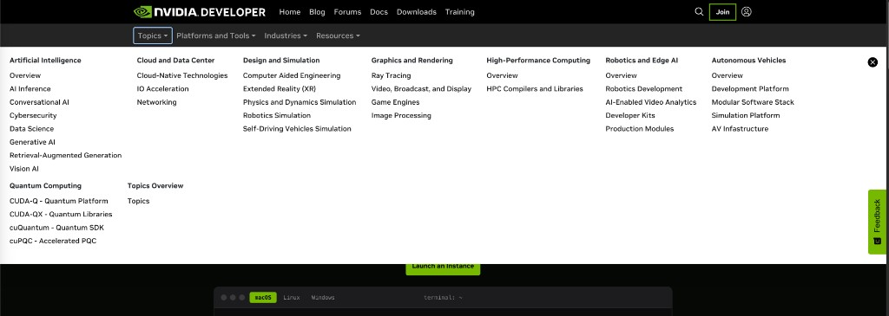
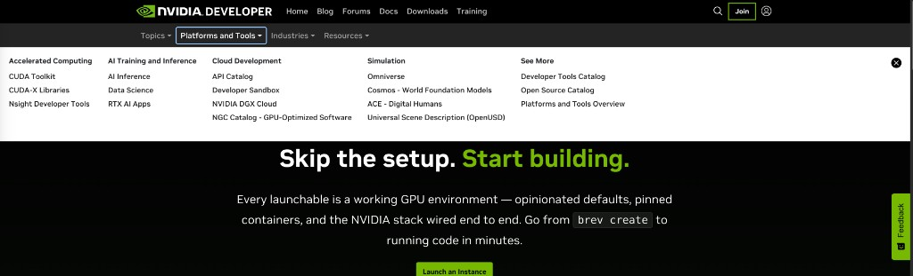
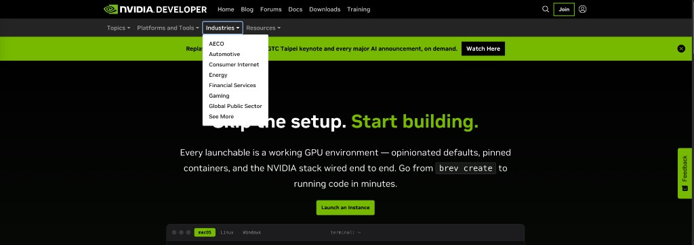
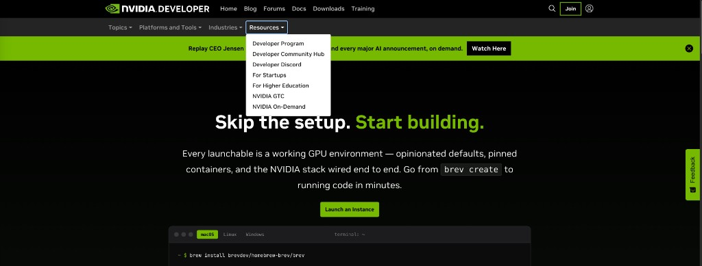
C · 技术文档 docs.nvidia.com · Docs Hub · 独立子域 · 顶栏截图核验
查看截图
D · NGC 软件目录 catalog.ngc.nvidia.com · ngc.nvidia.com 别名 → catalog · 顶栏截图核验
查看截图
E · AI API 试用 build.nvidia.com · NIM 在线试用与部署 · 顶栏截图核验
查看截图
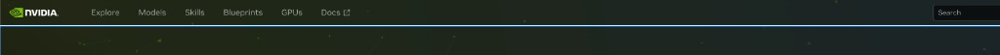
F · 官方博客 Company Blog blogs.nvidia.com · 大众向 · 顶栏截图核验
查看截图
G · 商城 Marketplace marketplace.nvidia.com · 主站 Shop 落地 · 顶栏截图核验
查看截图
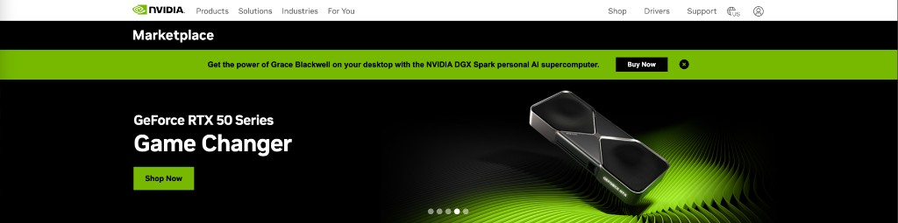
H · 投资者关系 Investor Relations investor.nvidia.com · 资本市场 · 顶栏截图核验
查看截图
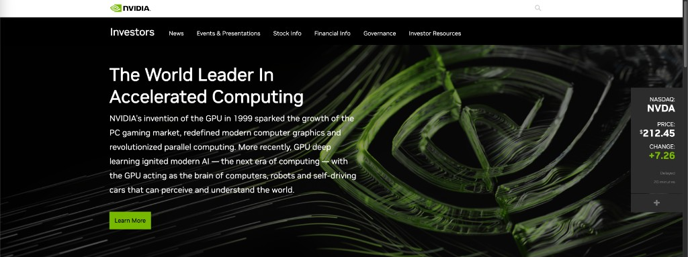
I · GeForce 消费者中心 nvidia.com/en-us/geforce · 同域路径型 · 双层顶栏（全局栏 + GeForce 栏）· 顶栏截图核验
查看截图（GeForce Products / Games & Tech）
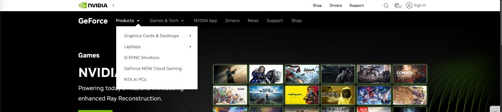
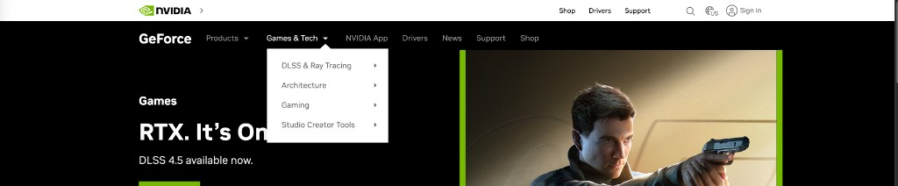
J · Drivers 驱动下载 nvidia.com/en-us/drivers · 同域路径型 · 独立子导航 · 顶栏截图核验
查看截图（含 Networking 下拉）
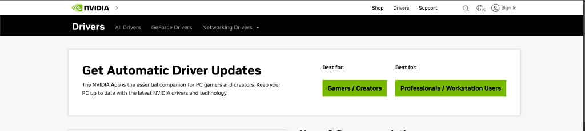
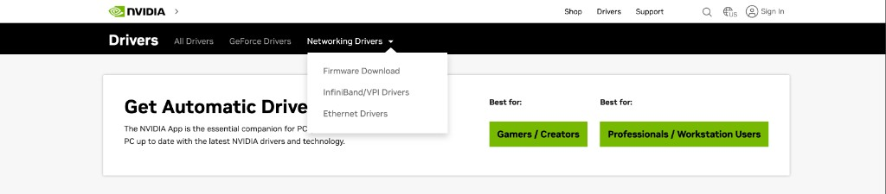
K · Support 支持中心 nvidia.com/en-us/support · 同域路径型 · 顶栏 Support 落地 · 双受众分流 · 顶栏截图核验
查看截图
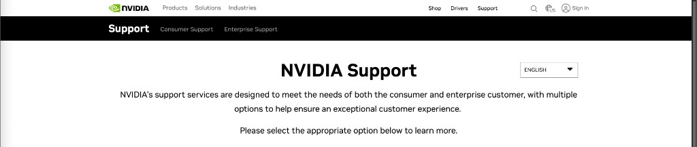
L · Omniverse 平台中心 nvidia.com/en-us/omniverse · 同域路径型 · 独立顶栏 Mega Menu · 顶栏截图核验
查看截图（Omniverse 5 菜单）
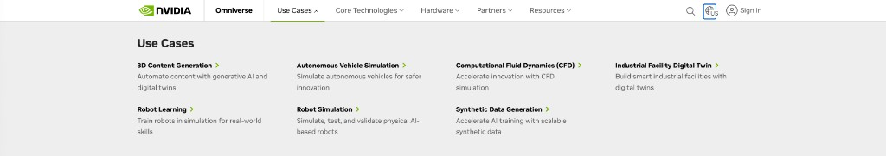
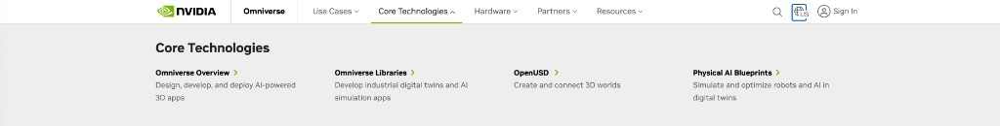
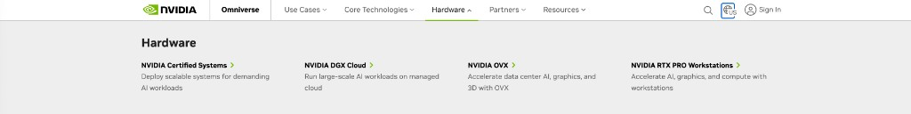
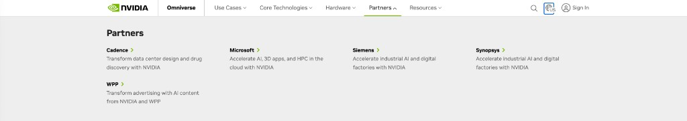
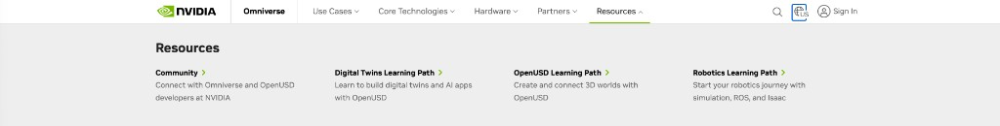
M · NVIDIA On-Demand nvidia.com/en-us/on-demand · 同域路径型 · 顶栏截图核验
查看截图
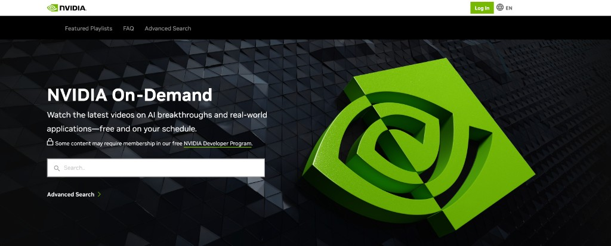
N · DLI 深度学习培训 learn.nvidia.com → /en-us/training · Deep Learning Institute · 顶栏截图核验
查看截图
O · 研究 Research at NVIDIA research.nvidia.com → /en-us/research/ · 独立顶栏 · 顶栏截图核验
查看截图
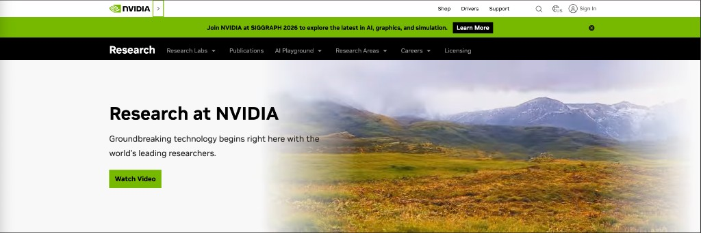
P · Inception 初创加速 nvidia.com/en-us/startups · 同域路径型 · 顶栏截图核验
查看截图
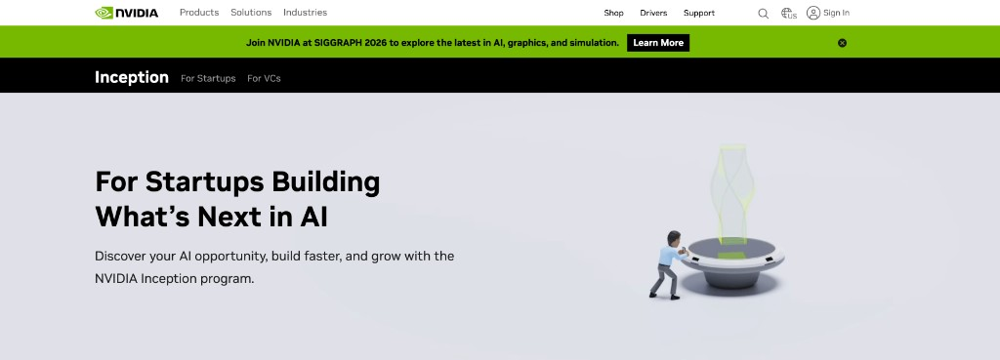
昇腾社区 信息架构图
主站 IA · 子站 IA · 同路径功能区 IA · 菜单 API 实时拉取 · 2026-06-15
A · 社区主站 hiascend.com/zh · tenantCode=community_site
B · 在线开发 HiDevLab hidevlab.huawei.com · 独立顶栏（截图核验）
C · 教育科研 edu.hicomputing.huawei.com · 鲲鹏+昇腾共建（截图核验）
D · 开发者专区 hiascend.com/developer · tenantCode=developer_sub_site
E · CANN 异构计算架构站点 hiascend.com/cann · 独立顶栏（截图核验）
/zh/cann/* 路由核验为主。
F · 昇腾论坛 hiascend.com/forum · 同域路径型 · 开发者问答社区 · 无截图（保守标注）
G · 昇腾AI市场 hiascend.com/marketplace · 独立顶栏（截图核验）
H · 合作伙伴 hiascend.com/ecosystem · 独立顶栏（截图核验）
信息架构竞品分析（最新）
按角色 → 任务 → 场景拆解两家官网 IA，量化可感知 · 点击 · 跳转三指标，对照竞品分析方法论（旅程地图 → 触点对比 → 模式识别 → 洞察闭环）。完整逐场景论证见「对比分析」Tab。
分析规划
三条核心洞察
单域连贯 vs 多域专名——两种 IA 哲学
证据：昇腾文档 / 下载 / 论坛共用 hiascend.com 顶栏；NVIDIA 拆为 docs.* / developer.* / catalog.ngc.* 等专名子域。
结论：昇腾站内开发者回访更顺（少 ↗）；NVIDIA站外机器可读性更强（URL 即职能标签）。
受众覆盖决定 IA 宽度，非细节打磨
证据：消费者 / 投资者场景昇腾为「—」缺位；NVIDIA 有 GeForce / investor 独立链路。
结论：昇腾 IA 是聚焦开发者 + 企业的单域社区；NVIDIA 是全受众分流——差距在战略边界，非导航细节。
行业 / 决策类入口：标签与用户心智错位
证据：医疗 BD 找方案——昇腾须识别「解决方案→行业应用」；NVIDIA 顶栏一级 Industries→Healthcare。
结论：非开发者角色的最大摩擦来自 L0 标签不直接对应任务意图；开发者侧摩擦在深链 ID / 缺闭环向导。
角色 × 场景总览
21 个非开发者场景 + 7 个开发者旅程阶段，综合可感知 → 点击 → 跳转（含跨域）判定胜负。完整表格与 IA 路径论证见各角色卡片。
| 角色 | 典型任务 | 昇腾胜 | NVIDIA 胜 | 平 / 缺位 | IA 判词 |
|---|---|---|---|---|---|
| CANN 开发者 7 阶段旅程 | 环境安装 · 查配套 / 下载 | ● | 同域一站式；兼容表深埋 | ||
| 算子开发 · 训练 · 推理 | ● | 文档同顶栏；样例路径长 | |||
| 调试 · 迁移 · 优化 | ● | ◐ | NV 错误码 / 迁移入口更专名 | ||
| 企业 / 决策者 | 查行业解决方案 | ● | Industries 一级 vs 解决方案下拉 | ||
| 评估数字孪生 / 仿真 | — | ● | 昇腾无 Omniverse 级入口 | ||
| 联系企业支持 | ◆ | 两家支持入口均可感知 | |||
| 采购 / 选购者 | 对比硬件规格 | ● | Atlas 四列对比直接 | ||
| 购买软件 / 订阅 | ● | Shop 一级 vs AI 市场 ◐ | |||
| 查购买渠道 | ◆ | 均需 2–3 击，均有 ↗ | |||
| 研究人员 / 学术 | 读最新论文 / 成果 | ● | research.* 专域 vs 教育科研 | ||
| 复现代码 / 框架 | ● | mindspore 外跳 vs NGC 图谱 | |||
| 看技术 Talk 录像 | ● | On-Demand 体系 vs 论坛碎片 | |||
| 学生 / 学习者 | 报名入门课程 | ● | learn.* 体系 vs edu 外跳 | ||
| 考取认证 | ● | DLI 品牌 vs 教育科研认证 | |||
| 免费在线实验 | ● | HiDevLab 顶栏直达 | |||
| 生态伙伴 / ISV | 加入伙伴计划 | ◆ | 均有专区，NV 页脚更深 | ||
| 初创加速申请 | — | ● | Inception vs 无对标 | ||
| 上架方案到市场 | ◆ | AI 市场 vs marketplace | |||
| 消费者 / 玩家 | 选购显卡 | — | ● | 根本分野：纯 B vs C 端 | |
| 下载驱动 | — | ● | GeForce / Drivers 专入口 | ||
| 游戏优化技术 | — | ● | 无对应业务线 | ||
| 投资者 / 媒体 | 季度财报 / 市值 | — | ● | investor 子站 vs 无 IR | |
| 获取新闻稿 | ● | nvidianews vs 社区资讯 | |||
| 公司战略动向 | ● | blogs 品牌 vs 活动资讯 |
● 昇腾更优 · ● NVIDIA 更优 · ◆ 相当 · — 缺位
开发者旅程地图 · CANN 全链路
按竞品分析框架绘制 4 行旅程（用户行为 · 关键触点 · 情绪 · 摩擦 / 机会），7 阶段横向展开。情绪刻度 −2～+2，低谷 = 设计机会。
触点级双栏对比（节选）
| 阶段 · 触点 | 昇腾 IA 路径 | NVIDIA IA 路径 | 判定 |
|---|---|---|---|
| 环境 · 版本兼容 | 文档深链 CANNCommunityEdition/850/… | docs.nvidia.com/cuda/… + developer 下载 | 昇腾同域 · NV 站外可读 |
| 环境 · 下载入口 | 顶栏 资源 → 软件包下载（同域） | developer.nvidia.com/cuda-downloads | ◆ 均可 2 击；NV ↗1 |
| 调试 · 错误码 | 文档字典 · 论坛搜索割裂 | docs 错误码 + forums 互链 | NVIDIA |
| 迁移 · 一体化 | 映射表 / 白皮书 / 工具三处 | CUDA→迁移专页 + NGC 镜像 tag | NVIDIA |
分角色 · 任务 · 场景
每角色 3 个从首页出发的典型场景。下表为判定摘要；逐场景 IA 路径论证见「对比分析」对应 persona 卡片。
| 场景 | 昇腾 | NVIDIA | 判定 |
|---|---|---|---|
| 查医疗行业方案 | ◐ 3 击 | ✓ 2 击 | NVIDIA 更优 |
| 评估数字孪生平台 | ✗ 无入口 | ◐ Omniverse | NVIDIA 更优 |
| 联系企业支持 | ✓ 2 击 | ✓ 2 击 | 相当 |
IA 要点：L0 第一位 CANN 偏开发者；行业方案藏在「解决方案→行业应用」，决策者 mental model 与标签错位。
| 场景 | 昇腾 | NVIDIA | 判定 |
|---|---|---|---|
| 对比硬件规格 | ✓ 产品→Atlas | ◐ Products 分散 | 昇腾更优 |
| 购买软件订阅 | ◐ AI 市场 | ✓ Shop | NVIDIA 更优 |
| 查购买渠道 | ◐ 3 击 | ◐ 3 击 ↗1 | 相当 |
IA 要点：昇腾 Atlas 四列对比是 B 端选购亮点；NVIDIA 企业 / 消费分流清晰但产品矩阵需预备知识。
| 场景 | 昇腾 | NVIDIA | 判定 |
|---|---|---|---|
| 读最新研究成果 | ◐ 教育科研 | ✓ research.* | NVIDIA 更优 |
| 复现代码 / 框架 | ↗ mindspore.cn | ✓ NGC / GitHub | NVIDIA 更优 |
| 看技术 Talk 录像 | ◐ 论坛碎片 | ✓ On-Demand | NVIDIA 更优 |
IA 要点：昇腾研究内容并入教育科研 + 外跳昇思；NVIDIA Research / On-Demand 形成专名内容子体系。
| 场景 | 昇腾 | NVIDIA | 判定 |
|---|---|---|---|
| 报名入门课程 | ◐ edu 外跳 | ✓ learn.* | NVIDIA 更优 |
| 考取认证 | ◐ 教育科研 | ✓ DLI | NVIDIA 更优 |
| 免费在线实验 | ✓ HiDevLab 顶栏 | ◐ build.* | 昇腾更优 |
IA 要点：HiDevLab 是昇腾顶栏直达亮点；NVIDIA 在课程体系与 DLI 品牌上更体系化。
| 场景 | 昇腾 | NVIDIA | 判定 |
|---|---|---|---|
| 加入伙伴计划 | ✓ 合作伙伴区 | ◐ 页脚 Partner | 相当 |
| 初创加速申请 | — 无对标 | ✓ Inception | NVIDIA 更优 |
| 上架方案到市场 | ◐ AI 市场 | ◐ marketplace | 相当 |
IA 要点：昇腾有独立 /ecosystem 合作伙伴区；NVIDIA Inception 填补初创场景，昇腾缺位。
| 场景 | 昇腾 | NVIDIA | 判定 |
|---|---|---|---|
| 选购显卡 | — | ✓ GeForce | 昇腾无此业务 |
| 下载驱动 | — | ✓ Drivers | 昇腾无此业务 |
| 游戏优化技术 | — | ✓ GeForce Tech | 昇腾无此业务 |
IA 要点：战略分野——昇腾纯 B 端，不在 IA 设计范围内；NVIDIA GeForce 完整 C 端链路。
| 场景 | 昇腾 | NVIDIA | 判定 |
|---|---|---|---|
| 季度财报 / 市值 | — | ✓ investor.* | 昇腾无此业务 |
| 获取新闻稿 | ◐ 社区资讯 | ✓ nvidianews | NVIDIA 更优 |
| 公司战略动向 | ◐ 活动资讯 | ✓ blogs.* | NVIDIA 更优 |
IA 要点：IR 在华为集团层，昇腾社区不承担；NVIDIA investor / news / blogs 三角覆盖资本市场。
IA 设计模式识别
模式 A · 单域社区型（昇腾）
- 表现：文档 / 下载 / 论坛 / 市场共用 hiascend.com 顶栏
- 优势：开发者回访零 ↗，上下文不丢
- 代价：URL 语义弱，站外 / AI 难归类
模式 B · 子域专名型（NVIDIA）
- 表现：docs.* / developer.* / catalog.ngc.* 按职能分域
- 优势：外部引用与 SEO 信号清晰
- 代价：跨站 ↗ 打断，需强互链图谱
模式 C · 三维 Mega Menu（NVIDIA 主站）
- 表现：Products × Solutions × Industries 多路径触达
- 优势：适配不同心智（产品 / 场景 / 行业）
- 代价：信息重复，新手不知走哪条
模式 D · 开发者优先 L0（昇腾）
- 表现：CANN 居 L0 首位，企业 / 行业次之
- 优势：核心受众（开发者）路径最短
- 代价：决策者 / 采购者 L0 线索弱
可执行建议 · So What
- 补站外信号：docs 子域或语义化 URL，不牺牲同域体验
- 环境向导：配套表 → 下载 → 镜像 串成一条路径（旅程阶段 1）
- 行业 L0 曝光：「解决方案 / 行业」提升可感知，对齐 BD mental model
- 迁移 / 调试闭环：错误码↔论坛互链；映射表 + 工具一站式
- 子域专名体系：外部可发现性与权威归类
- Industries 一级入口：非开发者角色行业方案直达
- On-Demand / Research：内容子体系品牌化
- 代价意识：跨域 ↗ 已在旅程中量化，互链需维护
两家网站信息架构对比
开发者旅程 × 官网触点
以昇腾 / CANN 开发者的完整旅程（7 阶段）为线索，逐环节标注哪些步骤必须回到官网完成、来做什么、落到 IA 的哪个板块。 多数编码动作在本地 IDE / CLI 完成，但下载、查配套表、拉镜像、查错误码、查迁移映射这几类只能在官网完成——它们才是真正高频的官网回访点。
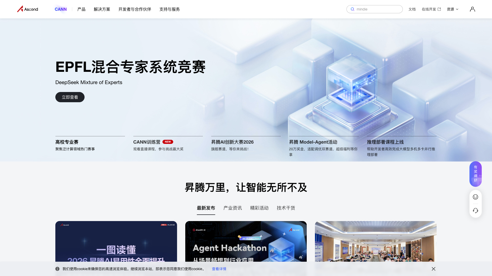
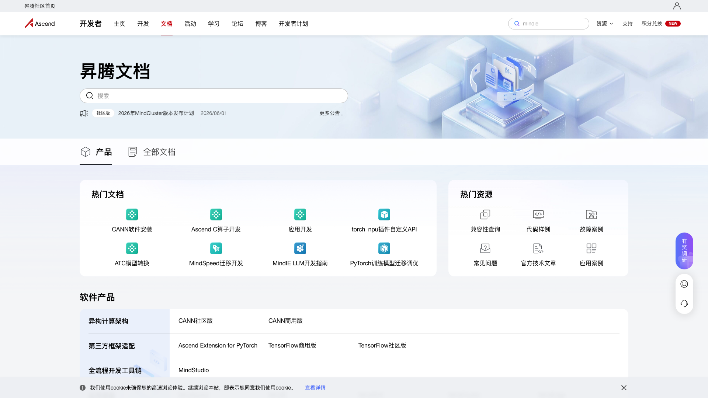
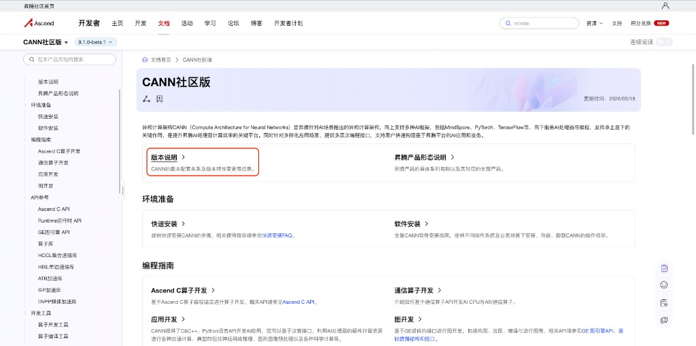
注：导航侧要选择CANN版本
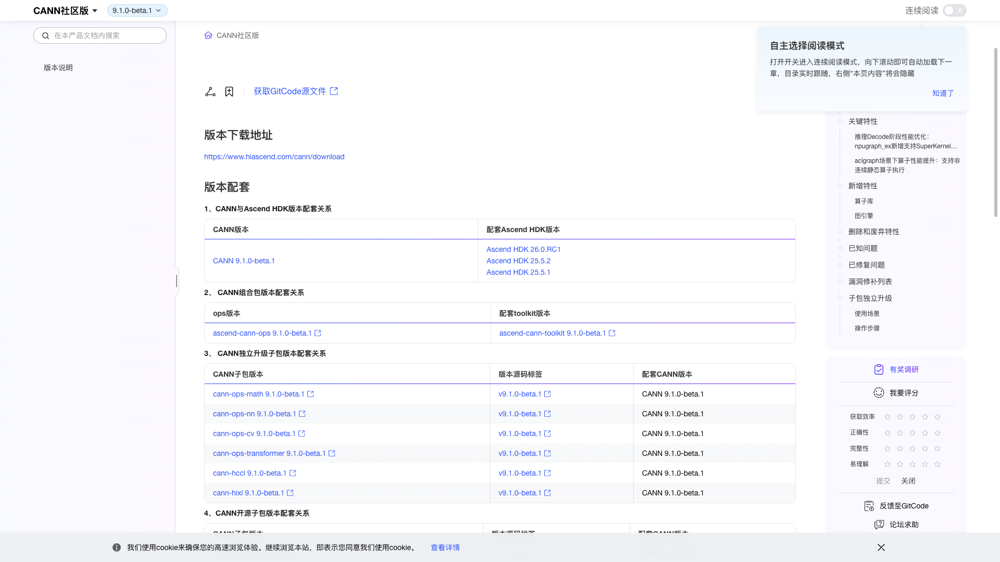
§2 组合包配套 · §3 子包升级 · §4 开源子包（按需）
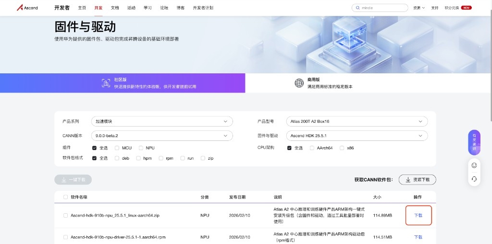
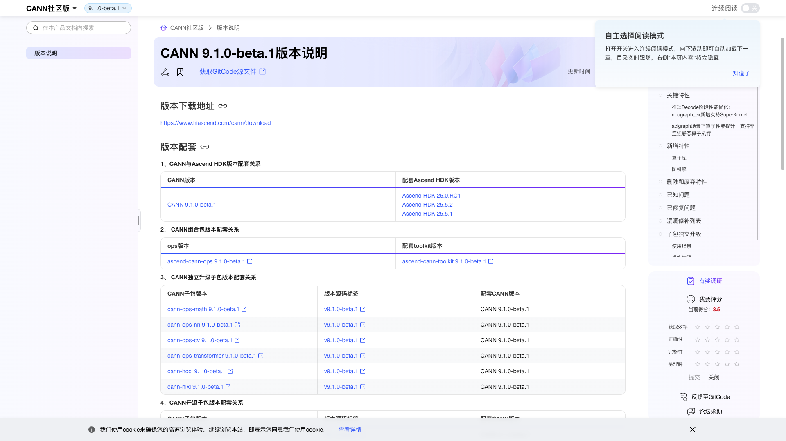
跳转社区版资源中心 · developer/download/community/result?module=cann&…
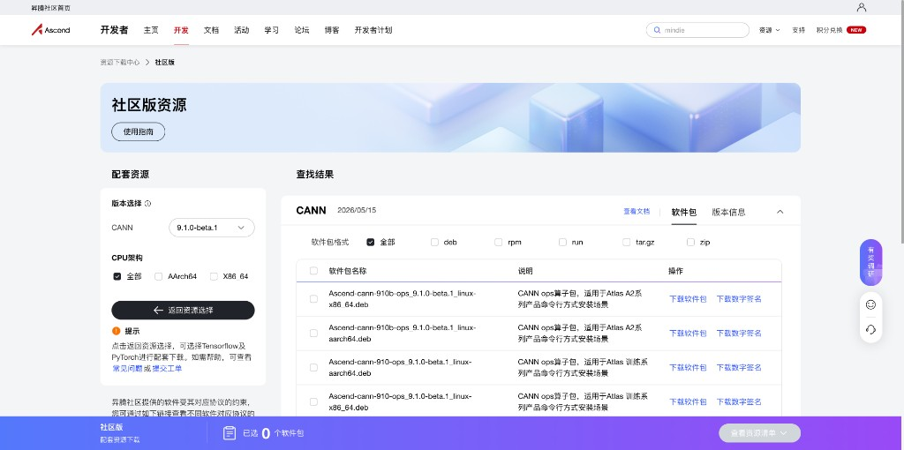
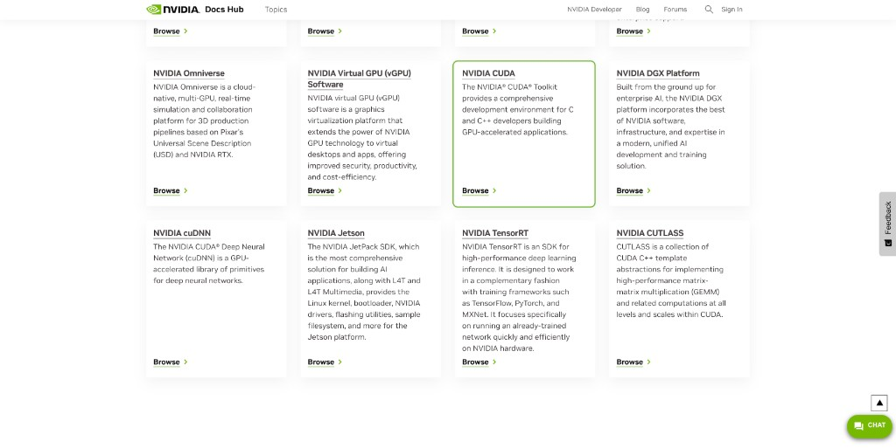
↗ 跨域 · 离开 nvidia.com 主站
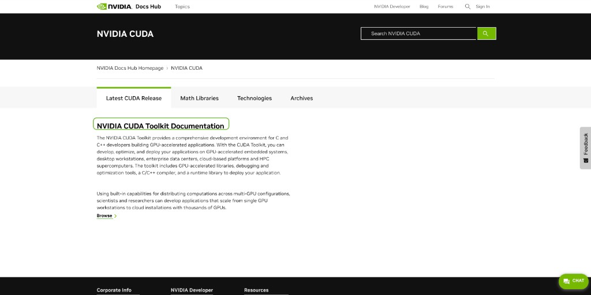
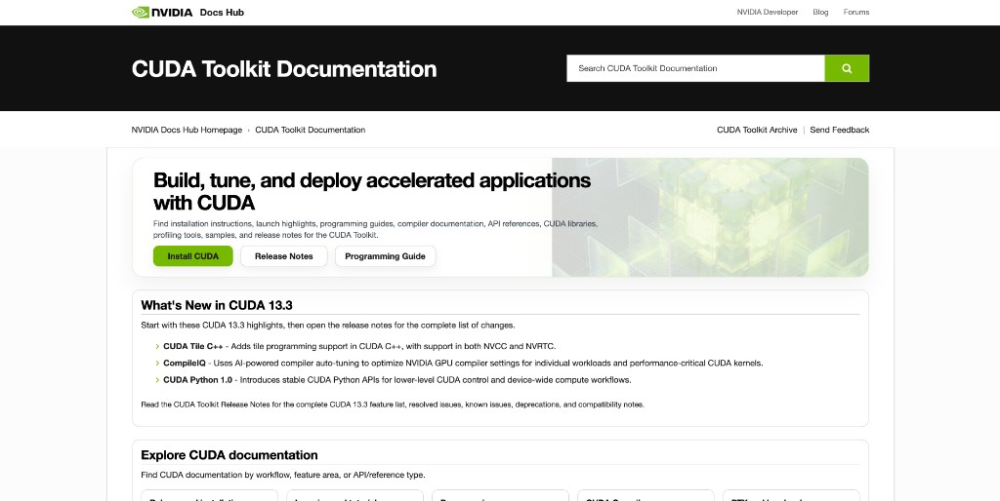
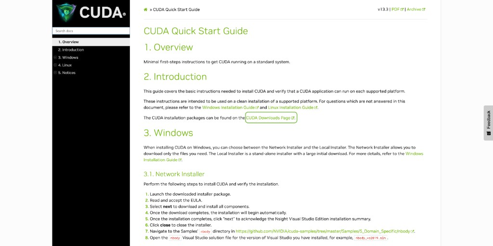
链向 Release Notes · CUDA Downloads Page
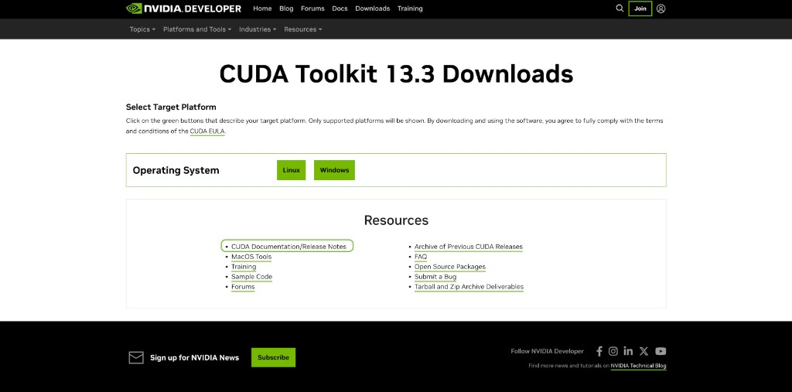
↗ 跨域 · docs → developer · 亦可从 ②③ 直达 Release Notes
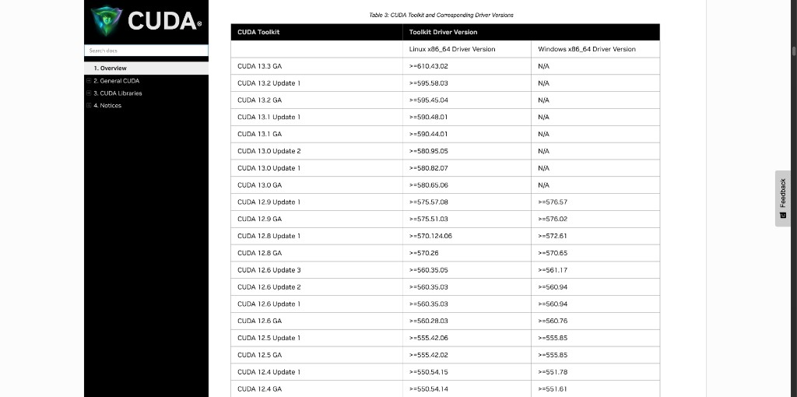
- 文档要绕几层，配套表藏在版本说明里
- 看完表去下驱动时两页没有链接，下完还得自己找回去
- 侧栏要先选对 CANN 版本，新手容易漏下 CANN 或下错包
- 要在文档站和开发者站之间切换
- 查表前要在文档里绕好几层
- 下载页和对照表不在同一页，本卡只查表、下载另开一项
装前通常先查上卡版本配套 · 驱动 / 固件见 HDK 页
↗ 跨域 · 装前查上卡兼容矩阵
Windows §3.2 · Linux §4 已含 export · Windows exe 通常无需再配
Explore · Release and installation 区
与 ② Linux 子节重叠 · runfile 需 PATH + LD_LIBRARY_PATH
横切来看，开发者反复回官网的「核心锚点」——双栏对称
| # | 昇腾 | NVIDIA | IA 模式 |
|---|---|---|---|
| 1 | 版本配套表 | CUDA × Driver 矩阵 | 装前必查 · 文档深埋 |
| 2 | 资源下载中心 | CUDA Downloads / Drivers | 工具下载型 · 与文档分立 |
| 3 | AscendHub 镜像 | NGC CUDA 镜像 | 容器化起点 · tag 须对齐版本 |
| 4 | 文档中心 /document | docs.nvidia.com | 文档树型 · 贯穿全程 |
| 5 | 错误码 + 昇腾论坛 | CUDA 错误码 + Dev Forums | 社区求助型 · 字典与帖未互链 |
| 6 | CUDA↔CANN 映射 | —（无对称需求） | 昇腾差异化 · 迁移专属强触点 |
全旅程 · IA 一句话
触点分布：强触点最密集在 1 环境安装、4 推理部署、6 调试、7 迁移——下载 / 查表 / 拉镜像 / 错误码 / 映射，必须回官网。
IA 形态：昇腾是「单域多入口并列」——全程 hiascend.com，顶栏「文档 / 资源▾ / 论坛」常驻；NVIDIA 是「多子域按职能拆分」——docs / developer / NGC / forums 随阶段切换，权威性强但连续性弱。
组织模式：三类 IA 模式横贯 7 阶段——文档树型（算子 / 训练 / 优化）· 工具下载型（环境 / 推理 / Profiling）· 社区求助型（调试 / OOM / 收敛）。
7 阶段 × IA 模块对照（衔接 IA 全录 A–P / A–H）
| 阶段 | 昇腾 IA 落点 | NVIDIA IA 落点 | 强触点密度 |
|---|---|---|---|
| 1 环境安装 | 社区主站 · 文档 / 资源▾ / AscendHubA 社区 · D 开发者专区 | docs · developer · NGCC 文档 · B Developer · F NGC | 高 3/3 强 |
| 2 算子开发 | CANN 文档树 · 开发者专区样例E CANN · D 开发者 | docs CUDA Guide · SamplesC 文档 · B Developer | 中 1/6 强 |
| 3 训练 | 文档 · HCCL · 昇腾论坛A 社区 · G 论坛 | docs NCCL · Dev ForumsC 文档 · L Forums | 中 0/4 强 |
| 4 推理部署 | 文档 ATC/MindIE · 资源下载D 开发者 · 工具链 | TensorRT · Triton · docsB Developer · C 文档 | 高 2/4 强 |
| 5 性能优化 | 文档 · msprof · 资源下载D 开发者 · MindStudio | Nsight Systems/Compute · docsB Developer · C 文档 | 中 1/4 强 |
| 6 调试 | 文档错误码 · 昇腾论坛A 文档 · G 论坛 | CUDA 错误码 · Dev ForumsC 文档 · L Forums | 高 1/2 强 |
| 7 迁移 | CUDA↔CANN 映射 · 白皮书 · 迁移工具A 文档 · D 开发者 | CUDA Portability · Programming GuideC 文档（无对称迁移入口） | 高 2/3 强 |
注：IA 全录中已有但旅程未单独成卡——兼容性查询助手（昇腾 D）、ModelZoo / NGC Models（训练找模型）、HiDevLab / build.nvidia.com（在线试用），属 personas「在线试用 / 找模型」场景，旅程 2–7 未展开。
阶段间 IA 强耦合链
IA 把强耦合链拆成并列入口（文档 / 下载 / 论坛 / 工具各一块），用户须在多个模块间手动串联——这是「站内寻宝 / 换站找抽屉」的根因。
从旅程反推 · IA 缺位
- 缺一站式环境准备向导——配套表 → 下载 → 镜像三步未串成一条路径（阶段 1）
- 缺错误码 → 论坛帖互链——字典与历史解决方案割裂（阶段 6）
- 缺 Profiling → 优化文档闭环——看到瓶颈后「改什么」仍靠经验（阶段 5）
- 缺迁移一体化入口——映射表 + 白皮书 + 迁移工具三处信息未串联（阶段 7）
- 昇腾缺「兼容性查询」顶栏曝光——IA 全录 D 区已有助手，旅程仍走文档深埋路径（阶段 1）
其他用户画像与场景的信息架构分析
把两家全部信息架构（昇腾 A–H · NVIDIA A–P）按「谁来用 · 来做什么」重新归类。
下方按 7 类用户画像分卡，每个角色设 3 个典型场景，从主站首页起算，对比两家在三项指标上的表现：
① 可感知（导航里能否直接看出入口）· ② 点击次数（到达目标的操作数）· ③ 跳转页面（加载的新页面数，↗ 标注跨域名切换次数）。
| 场景（从主站首页起） | 昇腾 | NVIDIA | ||||
|---|---|---|---|---|---|---|
| 可感知 | 点击 | 跳转 | 可感知 | 点击 | 跳转 | |
| 查某行业（医疗）解决方案昇：解决方案→行业应用 · NV：Industries→Healthcare | ◐ | 3 | 1 | ✓ | 2 | 1 |
| 评估数字孪生 / 仿真平台昇：解决方案下无直接对应 · NV：Omniverse | ✗ | 3 | 1 | ◐ | 2 | 1 |
| 联系企业支持 / 销售昇：支持与服务→技术工单 · NV：Support→Enterprise | ✓ | 2 | 1 | ✓ | 2 | 1 |
| 场景（从主站首页起） | 昇腾 | NVIDIA | ||||
|---|---|---|---|---|---|---|
| 可感知 | 点击 | 跳转 | 可感知 | 点击 | 跳转 | |
| 对比硬件型号规格昇：产品→Atlas 四列 · NV：Products 分散，需进具体产品页 | ✓ | 2 | 1 | ◐ | 3 | 2 |
| 购买软件 / 订阅昇：昇腾AI市场 · NV：Shop→marketplace.nvidia.com | ◐ | 2 | 1 | ✓ | 2 | 1 ↗1 |
| 查询购买渠道 / 授权昇：AI市场 / 合作伙伴 · NV：Where to Buy / marketplace | ◐ | 3 | 1 | ◐ | 3 | 2 ↗1 |
| 场景（从主站首页起） | 昇腾 | NVIDIA | ||||
|---|---|---|---|---|---|---|
| 可感知 | 点击 | 跳转 | 可感知 | 点击 | 跳转 | |
| 读最新论文 / 研究成果NV：/research/（research.* 301）· 昇：教育科研 / 外跳昇思 | ✗ | 3 | 2 ↗1 | ◐ | 3 | 2 ↗1 |
| 复现代码 / 找开源框架昇：外跳 mindspore.cn · NV：developer→NGC / GitHub | ◐ | 2 | 1 ↗1 | ◐ | 3 | 2 ↗1 |
| 看技术 Talk / 录像昇：论坛 / 资讯，无体系化点播 · NV：On-Demand | ✗ | 3 | 1 | ◐ | 2 | 1 |
| 场景（从主站首页起） | 昇腾 | NVIDIA | ||||
|---|---|---|---|---|---|---|
| 可感知 | 点击 | 跳转 | 可感知 | 点击 | 跳转 | |
| 报名入门课程昇：教育科研→edu 外跳 · NV：/training（301）→learn.nvidia.com | ◐ | 2 | 1 ↗1 | ◐ | 3 | 2 ↗1 |
| 考取认证昇：教育科研认证 · NV：DLI 认证体系 | ◐ | 3 | 2 ↗1 | ◐ | 3 | 2 ↗1 |
| 用免费在线实验环境昇：顶栏「在线开发」HiDevLab（免费） · NV：build.nvidia.com | ✓ | 1 | 1 ↗1 | ◐ | 3 | 2 ↗1 |
| 场景（从主站首页起） | 昇腾 | NVIDIA | ||||
|---|---|---|---|---|---|---|
| 可感知 | 点击 | 跳转 | 可感知 | 点击 | 跳转 | |
| 加入伙伴计划NV：Partner Network（页脚 / 二级）· 昇：合作伙伴 /ecosystem | ✓ | 2 | 1 | ◐ | 3 | 2 |
| 初创申请加速昇：无专门初创计划 · NV：Inception /startups | ✗ | 3 | 1 | ◐ | 2 | 1 |
| 上架方案到市场昇：昇腾AI市场上架 · NV：marketplace 提交 | ◐ | 2 | 1 | ◐ | 3 | 2 ↗1 |
| 场景（从主站首页起） | 昇腾 | NVIDIA | ||||
|---|---|---|---|---|---|---|
| 可感知 | 点击 | 跳转 | 可感知 | 点击 | 跳转 | |
| 选购显卡昇：无对应业务 · NV：GeForce→Buy / Shop | — | — | — | ✓ | 2 | 2 ↗1 |
| 下载显卡驱动昇：无消费级驱动 · NV：顶栏 Drivers / GeForce App | — | — | — | ✓ | 1 | 1 |
| 游戏优化 / 技术昇：无对应业务 · NV：GeForce→Games & Tech | — | — | — | ✓ | 2 | 1 |
| 场景（从主站首页起） | 昇腾 | NVIDIA | ||||
|---|---|---|---|---|---|---|
| 可感知 | 点击 | 跳转 | 可感知 | 点击 | 跳转 | |
| 看季度财报 / 市值昇：无独立 IR · NV：页脚 Investors→investor 子站 | — | — | — | ◐ | 2 | 1 ↗1 |
| 获取新闻稿昇：社区→新闻资讯 · NV：nvidianews / blogs | ◐ | 2 | 1 | ◐ | 2 | 1 ↗1 |
| 了解公司战略动向昇：社区资讯 / 活动 · NV：blogs.nvidia.com | ◐ | 2 | 1 | ◐ | 2 | 1 ↗1 |
受众覆盖总览 · 谁被照顾到了
| 用户画像 | 昇腾 | NVIDIA | 关键差异 |
|---|---|---|---|
| 企业 / 技术决策者 | ◐ | ● | 昇腾需下拉多一层；NVIDIA 行业入口在顶栏一级 |
| 采购 / 选购者 | ● | ● | 昇腾产品页对比直接；NVIDIA 企业 / 消费分流清晰 |
| 研究人员 / 学术 | ◐ | ● | 昇腾并入教育科研 + 外跳昇思；NVIDIA 有独立 Research |
| 学生 / 学习者 | ● | ● | 昇腾偏高校共建与免费实验；NVIDIA 体系化认证 |
| 生态合作伙伴 / ISV | ● | ● | 昇腾独立合作伙伴区；NVIDIA 初创 / 成熟伙伴分层 |
| 消费者 / 玩家 | — | ● | 根本分野：昇腾纯 B 端；NVIDIA 有完整 C 端链路 |
| 投资者 / 媒体 | — | ● | 昇腾无独立 IR（华为集团层面）；NVIDIA 独立 IR 子站 |
一句话总结：昇腾的 IA 是「聚焦开发者与企业的单域社区」——同域同顶栏让 B 端用户全程顺滑，但消费级、投资者等角色不在其服务范围内； NVIDIA 的 IA 是「全受众覆盖」——从消费者、玩家到投资者各有专属入口，以独立子域按角色分流。
可发现性对比分析
「可发现性」分两层：站内（用户已在官网，能否从导航找到目标）已在上方旅程与用户画像中逐项量化； 本节聚焦站外 / 机器可读——搜索引擎、AI 助手、第三方引用时，能否仅凭 URL / 域名判断「这是不是权威文档 / 工具 / 社区」。
判定逻辑：子域专名 > 路径语义 > 数字 ID 深链；同品牌内链图谱越完整，外部系统越容易把「权威中心」归到正确子站。
五维对照表
| 维度 | 昇腾 | NVIDIA | 对比结论 |
|---|---|---|---|
| 域名信号 | 文档在 hiascend.com/document 路径下，与社区首页、营销页同域；机器须读路径才知「这是文档」 |
docs.nvidia.com、developer.nvidia.com、catalog.ngc.nvidia.com 等子域即标签 |
NVIDIA 更优 · 子域专名降低歧义 |
| URL 语义 | 深层文档 URL 常含数字 ID（如 …/850/…/releasenote_0000.html），路径难表达内容类型与版本 |
docs 树多用语义 slug（/cuda/cuda-toolkit-release-notes），版本与产品线可从路径推断 |
NVIDIA 更优 · 利于 SEO 与 AI 摘要 |
| 链接图谱 | MindSpore、AscendHub、HiDevLab 等多为外跳，hiascend.com 站内链接图谱在关联站点处断开 |
主站 ↔ docs ↔ developer ↔ NGC ↔ forums 子站互链密集，爬虫 / LLM 易识别「官方文档中心」 | NVIDIA 更优 · 权威中心更集中 |
| 搜索引擎 | 社区页与文档页同域竞争索引权重；文档深链 snippet 难与 CANN 版本页区分 | docs 子域独立 sitemap / canonical 策略成熟；Driver、CUDA 等高频词有专属 landing | NVIDIA 更优 · 专域收录更干净 |
| AI / 引用 | AI 引用时须说明「昇腾社区文档路径」；hiascend.com/zh 与 /document 易被混为一谈 |
docs.nvidia.com 已成行业默认引用源；ChatGPT / Perplexity 训练语料中子域辨识度更高 |
NVIDIA 更优 · 外部引用默认指向更明确 |
典型 URL · 机器如何「读懂」
昇腾 · 站外视角
www.hiascend.com/document/detail/zh/CANNCommunityEdition/850/…— 需读到document才知是文档；850对机器无产品线语义www.hiascend.com/zh— 社区首页，与文档、下载、论坛共用顶栏，snippet 难区分职能mindspore.cn、AscendHub — 关联生态不在 hiascend.com 图谱内，AI 难串联「昇腾官方 → 框架 → 镜像」
NVIDIA · 站外视角
docs.nvidia.com/cuda/cuda-toolkit-release-notes— 域名 + 路径双重表达「CUDA 发布说明」developer.nvidia.com/cuda-downloads— 下载意图一目了然，与 docs 互链catalog.ngc.nvidia.com— 容器镜像独立品牌域，与 CUDA 版本 tag 对齐有专页
小结 · 对 IA 设计的启示
昇腾短板集中在站外可发现性——不是内容缺失，而是信号载体：同域路径 + 数字 ID + 外跳生态，让搜索引擎与 AI 难以像 NVIDIA 子域体系那样「一眼归类」。
可选改进方向：文档独立子域 docs.hiascend.com、语义化 URL、关联站点在页内显式回链社区锚点——在不牺牲同域连贯体验的前提下，补站外识别信号。NVIDIA 的子域拆分是其外部可发现性的结构性优势，代价是用户跨站切换（已在旅程章节量化）。